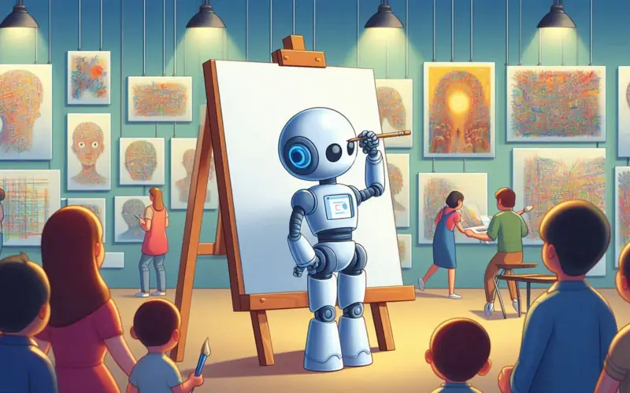
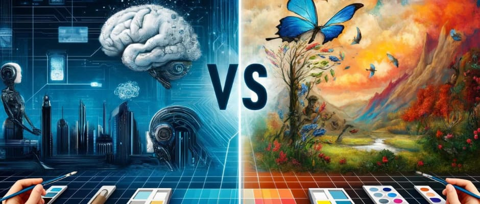

DALL·E es una inteligencia artificial desarrollada por OpenAI capaz de generar imágenes originales a partir de descripciones escritas utilizando modelos avanzados de generación visual.
Ir a DALL·E OficialDesarrollador
Texto a imagen
Creatividad visual


Crea imágenes a partir de texto.
Produce ilustraciones y arte digital.
Permite visualizar ideas complejas.
Ayuda a crear conceptos visuales únicos.